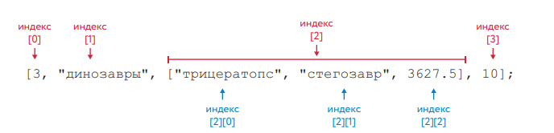

JavaSript
Массивы и способы обратоки массивов
- Масивы в JavaScript
- Методы для работы с массивами
Положим, вы решили написать программу для учета всех видов динозавров, которые вам известны. Вы
можете создать для каждого вида отдельную переменную:
Однако пользоваться этим списком не слишком удобно — у вас
есть девять переменных там, где можно обойтись лишь одной.
| 1 | var dinosaurik1 = "Тираннозавр"; |
| 2 | var dinosaurik2 = "Велоцираптор"; |
| 3 | var dinosaurik3 = "Стегозавр"; |
| 4 | var dinosaurik4 = "Трицератопс"; |
| 5 | var dinosaurik5 = "Брахиозавр"; |
| 6 | var dinosaurik6 = "Птеранодон"; |
| 7 | var dinosaurik7 = "Апатозавр"; |
| 8 | var dinosaurik8 = "Диплодок"; |
| 9 | var dinosaurik9 = "Компсогнат"; |

| 1 | |
| 2 | var name = [ ] |
| 3 | |
| 4 | var name = new Array() |
Чтобы создать массив со значениями, нужно перечислить эти значения внутри квадратных скобок, разделяя их запятыми. Отдельные значения, хранящиеся в массиве, называют элементами. В данном примере
все элементы будут строковыми
| 1 | var dinosaurs = ["Тираннозавр", "Велоцираптор", |
| 2 | "Стегозавр","Трицератопс", "Брахиозавр", |
| 3 | "Птеранодон", "Апатозавр","Диплодок", |
| 4 | "Компсогнат"]; |
Чтобы получить доступ к элементам массива, используйте квадратные
скобки с индексом нужного вам элемента, как в этом примере:
Индекс — это номер элемента, в котором хранится значение.

| 1 | dinosaurs[0]; |
| 2 | "Тираннозавр" |
| 3 | dinosaurs[3]; |
| 4 | "Трицератопс" |
JavaScript не поддерживает «настоящие» многомерные массивы, но позволяет неплохо имитировать
их при помощи массивов из массивов. Для доступа к эле-менту данных в массиве массивов
достаточно дважды использовать оператор []. Например, предположим, что переменная matrix – это
массив массивов чисел. Ка-ж дый элемент matrix[x] – это массив чисел. Для доступа копределенному
числу в массиве можно использовать выражение matrix[x][y]. Ниже приводится кон-кретный пример, где двумерный мас сивиспользуется в качестве таблицы умно-жения:
| 1 | // Создать многомерный массив |
| 2 | var table =new Array(10) |
| 3 | for(var i = 0; i < table.length; i++) |
| 4 | table[i] = new Array(10); |
| 5 | |
| 6 | // Инициализировать массив |
| 7 | for ( var row = 0; row < table.length; row++){ |
| 8 | for( col = 0;col < table[row].length; col++){ |
| 9 | table[row][col] = row * col; |
| 10 | } |
| 11 | } |
| 12 | // Расчет произведения 5 * 7 с помощью многомерного массива |
| 13 | var product = table[5][7]; |
Стандарт ECMA Script3 определяет в составе Array.prototype множество
удобных функций для работы с массивами, которые доступны как методы
любого массива.
- Создайте массив размерностью 15 элементов, выведите все элементы в обратном порядке и разделите каждый элемент спецсимволом "Облака". При загрузке страницы спросите у пользователя индекс и удалите этот элемент из массива.
-
Создайте массив styles с элементами «Джаз» и «Блюз».
Добавьте «Рок-н-ролл» в конец.
Замените значение в середине на «Классика». Ваш код для поиска значения в середине должен работать для массивов с любой длиной.
Удалите первый элемент массива и покажите его.
Вставьте «Рэп» и «Регги» в начало массива.
- Повторить все то что проходили на уроке
дэвид флэнаган javascript 6 издание страница 164 - 181 страница
JavaScript Для детей 126-149ст.